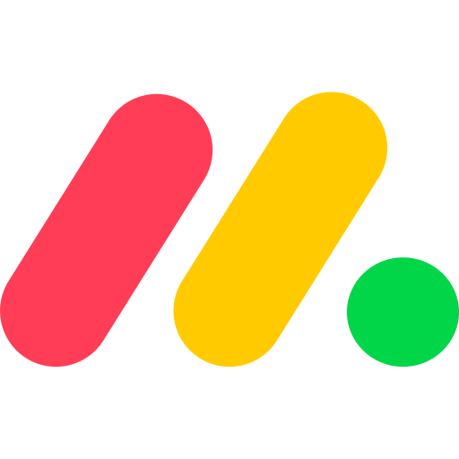

Aplicaciones y Sitios Recomendados
En la unidad II, las actividades asignadas motivaron a una investigacion y revision sobre que aplicaciones y sitios web se podrian usar ya sea para la creacion de documentos, almacenaje de los mismos, comunicacion, etc.

Mockingbird
Software para diseño de interfaces y herramienta de prototipado con la funcion de enlazar y compartir las maquetas y páginas.

Github
Repositorio online que permite la gestion de proyectos y el control de versiones.

Trello
Herramienta visual que permite a los equipos gestionar cualquier tipo de proyecto y flujo de trabajo, así como supervisar tareas.
Monday.com
Software de gestión de requisitos que ayuda a los equipos a planificar eficientemente y a ejecutar proyectos para lograr resultados a tiempo.